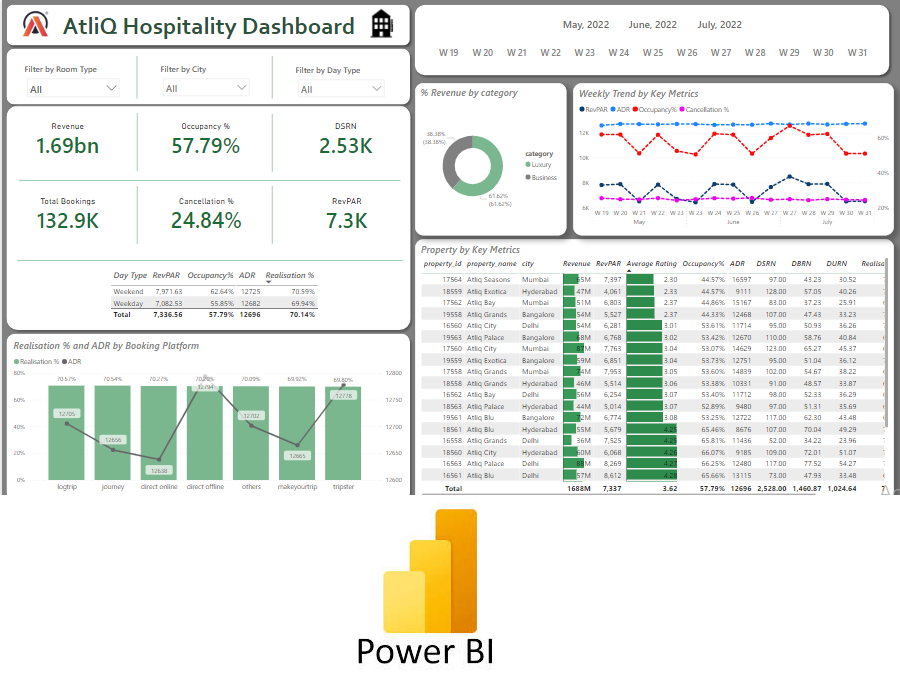
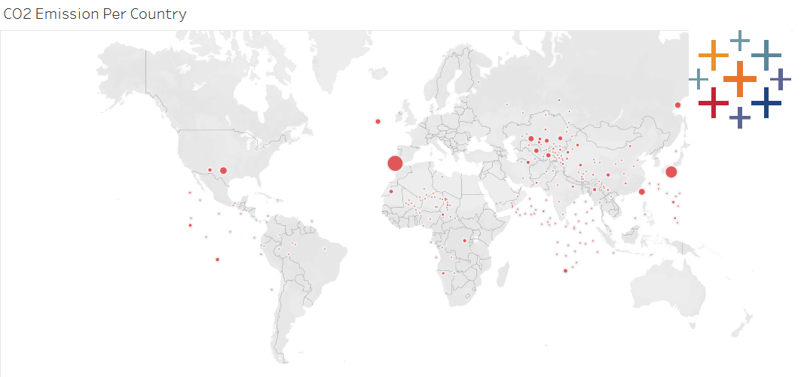

Conducted a comprehensive descriptive analysis on the Telangana government's dataset. This analysis unveiled trends, established relationships, and generated strategic insights to facilitate well-informed decision-making.

An interactive PowerBI dashboard created with all the essential KPIs and key measures to rectify current situation & develop well informed strategies for the future.

This project focuses on examining a comprehensive dataset that includes booking and revenue details for a (fictional) prominent five-star hotel chain using SQL & PowerBI.

This project includes analysis performed using SQL on a dataset containing product survey feedback from 10 major cities across india with a goal to provide marketing insights to an energy drink company.

This project revolves around the exploration and analysis of sales data from an online e-commerce store. Specializing in clothing for males and females to explore trends and patterns in purchases.

This project explores a dataset with information about individual order's made from different ecommerce websites pan india for an online store to explore purchase behavior and customer geographics.

Data Visualization on globel map showing CO2 Emission per country using tableau.